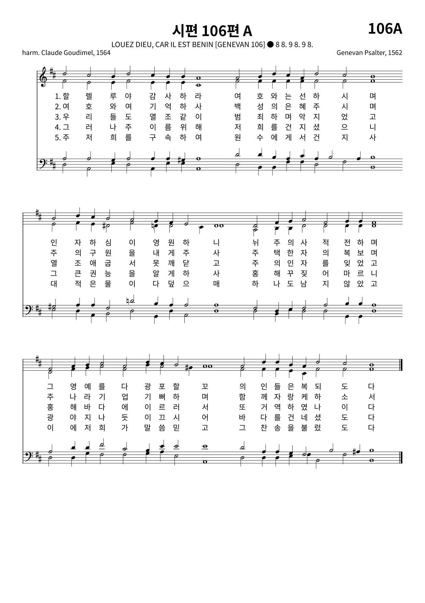

Psalm 106A
LOUEZ DIEU, CAR IL EST BENIN [GENEVAN 106] · 8 8. 9 8. 9 8.
English title: Oh, Thank the LORD, Bring Him Your Praise
Tune: Genevan Psalter, 1562 · Harmony: Claude Goudimel, 1564 · Lyrics: Korean adaptation of Psalm 106 from the Korean Revised Version (AI draft adaptation · not yet theologically reviewed) · 5 stanzas
Psalm 106 is divided into 3 tunes: A B C · This tune contains stanzas 1–5 of the Psalm 106 lyrics.
Score PDF MusicXML (for printing) MusicXML (for accompaniment, with prelude and repeats) Read Psalm 106 (Korean Revised Version)
Score
← Psalm 105C ListAccompaniment (in preparation)Psalm 106B →
Lyrics (Korean)
Stanza 1
할렐루야 감사하라
여호와는 선하시며
인자하심이 영원하니
뉘 주의 사적 전하며
그 영예를 다 광포할꼬
의인들은 복되도다
할렐루야 감사하라
여호와는 선하시며
인자하심이 영원하니
뉘 주의 사적 전하며
그 영예를 다 광포할꼬
의인들은 복되도다
Stanza 2
여호와여 기억하사
백성의 은혜 주시며
주의 구원을 내게 주사
주 택한 자의 복 보며
주 나라 기업 기뻐하며
함께 자랑케 하소서
여호와여 기억하사
백성의 은혜 주시며
주의 구원을 내게 주사
주 택한 자의 복 보며
주 나라 기업 기뻐하며
함께 자랑케 하소서
Stanza 3
우리들도 열조같이
범죄하며 악 지었고
열조 애굽서 못 깨닫고
주의 인자를 잊었고
홍해 바다에 이르러서
또 거역하였나이다
우리들도 열조같이
범죄하며 악 지었고
열조 애굽서 못 깨닫고
주의 인자를 잊었고
홍해 바다에 이르러서
또 거역하였나이다
Stanza 4
그러나 주 이름 위해
저희를 건지셨으니
그 큰 권능을 알게 하사
홍해 꾸짖어 마르니
광야 지나듯 이끄시어
바다를 건네셨도다
그러나 주 이름 위해
저희를 건지셨으니
그 큰 권능을 알게 하사
홍해 꾸짖어 마르니
광야 지나듯 이끄시어
바다를 건네셨도다
Stanza 5
주 저희를 구속하여
원수에게서 건지사
대적은 물이 다 덮으매
하나도 남지 않았고
이에 저희가 말씀 믿고
그 찬송을 불렀도다
주 저희를 구속하여
원수에게서 건지사
대적은 물이 다 덮으매
하나도 남지 않았고
이에 저희가 말씀 믿고
그 찬송을 불렀도다